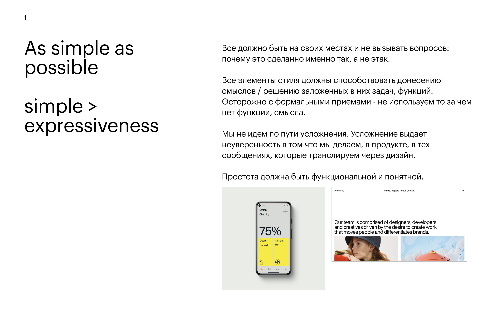

Osme
Образовательная экосистема
Skyeng — крупнейшая онлайн-школа в России. Английский, математика, программирование, подготовка к экзаменам. Десятки продуктов под разными брендами: Skyeng, Skysmart, Skypro. Компания решила объединить всё в одну экосистему под новым именем — Osme. Единый бренд для взрослых и детей, для России и международного рынка.
Задача: создать айдентику с нуля. Не редизайн, а новый визуальный язык — от стратегии до паспорта бренда и двух сайтов.
Бренд-стратегия
Начали с фундамента. Brand Heart: зачем существует Osme, какое будущее создаёт, какие ценности направляют поведение. Четыре блока: Global Purpose, Vision, Definition, Core Values.
Изучили позиционирование Apple, IKEA, Spotify, Meta — как формулируют миссию, какие ценности выделяют. Не для копирования, а для калибровки уровня.
Параллельно — бриф с продуктовой командой. Структура экосистемы, целевая аудитория, ценностное предложение, ключевые метрики. Цель дизайна: показать вовлечение и спрос, а не утилитарность.


Паспорт и принципы
Перед поиском формы — правила. Паспорт бренда фиксирует, что можно, а что нет. Восемь категорий: принципы, типографика, цвет, модульная сетка, пространство, графика, копирайтинг, фотографии.
Главный принцип: simple > expressiveness. Всё должно быть на своих местах и не вызывать вопросов. Усложнение выдаёт неуверенность. Простота должна быть функциональной и понятной.

expressiveness" loading="lazy">14 направлений
Два месяца концептуального поиска. Каждое направление — это не вариант логотипа, а система: идея, форма, цвет, типографика, применение в продукте и маркетинге.
Creators of Tomorrow Club, Life Explorers, Unlocking Potential, As Simple As Possible, Solar System, Inside Movement, Focus & Icons, Zoom, HELIX, Going Beyond, Volchok, Layers & Infinity, Luchi, Spiral of Learning.
Каждое направление тестировалось на одних и тех же сценариях: главная страница, карточка курса, Instagram-история, визитка. Это давало честное сравнение.

Три финалиста
HELIX / Inside Movement. Спираль как символ внутреннего движения. Статичное движение — форма, которая передаёт энергию без крика. Тёмная палитра, контрастная типографика, человек в потоке. Развилась в полноценную систему с SMM, мокапами, 3D-визуализациями.
Going Beyond + Singularity. Выход за рамки. Яркие формы, иконическая система, отсылки к Meta и современным tech-брендам. Много цвета, динамичные композиции.
Luchi. Лучи как метафора познания. Цветовые эксперименты — от неоновых до пастельных, геометрические паттерны из расходящихся линий.


Сайт: Россия
Точка входа в экосистему. Три продукта — Skyeng, Skysmart, Skypro — под единой навигацией. Каталог по возрасту и цели: английский взрослым, школьные предметы, Python-разработчик, маркетолог.
Первый экран — видео с живым человеком. Не стоковое фото, а контент, который передаёт атмосферу: учиться, вдохновляться, развиваться, достигать большего.
Адаптивная вёрстка. Мобильная версия проектировалась параллельно с десктопом — не как сжатая копия, а как отдельный опыт.
Сайт: International
Английская версия для международного рынка. Шесть языков на запуске: английский, испанский, итальянский, немецкий, французский, польский.
Другая структура, другая навигация, другие продукты. Принципы блочной вёрстки: маркетинговые блоки в каталоге, адаптивная сетка карточек, лид-формы для взрослых и детей.
Отдельно проработаны: меню с мультиязычностью, страницы продуктов, экосистемный блок с интерактивными шторками, блоки с учителями и видео-обращениями.
Роль
Бренд-дизайнер в команде айдентики Skyeng. Работал над проектом от стратегии до финальных макетов. Разработал бренд-стратегию, провёл исследование позиционирования, создал 14 концептуальных направлений, оформил паспорт бренда, спроектировал два сайта — российский и международный.